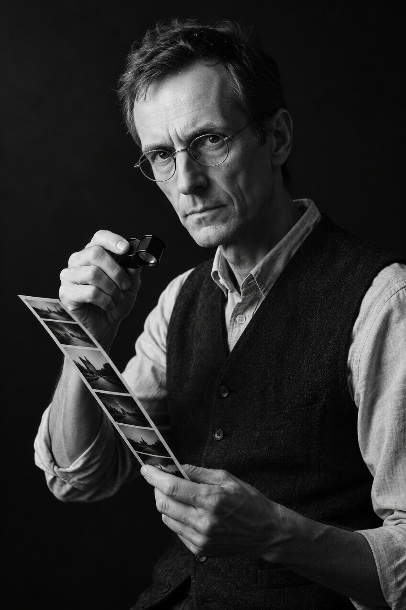

The Studio
Twelve years in, we noticed the same faces coming back and realized the market had a second act nobody was photographing. The craft is identical: light, timing, and knowing where to stand when someone starts to cry. Only the paperwork changed.
The sitting room, Suite 9. Clients wait in separate but equally appointed corners.
The Photographers
Principal, Signing Days
Fourteen years of weddings taught Vivienne to anticipate a tear at forty paces. She shoots every decree signing herself and holds the studio record for most consecutive golden hours without a missed exposure. Her favorite subject is the handshake nobody expects to happen.

Principal, Still Life & Albums
Emil photographs the division of effects: the records, the ring dishes, the one good frying pan. He trained in Dutch still life and it shows. He also binds every album by hand and has strong opinions about foil, all of them correct.
The Process
A quiet conversation about the day, the venue, and who will be there. Held jointly or separately. Most choose separately, then say the same things.
We arrive before the light does. Coverage is unobtrusive: no direction during the proceedings, gentle direction on the steps. The pen photograph takes eleven seconds.
Editing takes three weeks. Albums ship in identical pairs with your title foil-stamped in gold. We keep no copies beyond the portfolio, and only with permission.
“People ask if the work is sad. The work is honest. Weddings gave us hope in good light; this gives us relief in better light, because we get to pick the hour.”Vivienne Osei, principal
Consultations are complimentary and confidential, even from each other.
Request a Consultation